생산자동화산업기사 (2018-08-19 기출문제)
1과목: 기계가공법 및 안전관리
1. 센터리스 연삭기에 필요하지 않은 부품은?
- 받침판
- 양센터
- 연삭숫돌
- 조정숫돌
(정답률: 75%)

2. 나사의 유효지름을 측정하는 방법이 아닌 것은?
- 삼침법에 의한 측정
- 투영기에 의한 측정
- 플러그 게이지에 의한 측정
- 나사 마이크로미터에 의한 측정
(정답률: 57%)
3. 바깥지름 원통 연삭에서 연삭숫돌이 숫돌의 반지름 방향으로 이송하면서 공작물을 연삭하는 방식은?
- 유성형
- 플런지 컷형
- 테이블 왕복형
- 연삭숫돌 왕복형
(정답률: 58%)
4. 정밀 입자 가공 중 래핑(lapping)에 대한 설명으로 틀린 것은?
- 가공면의 내마모성이 좋다.
- 정밀도가 높은 제품을 가공할 수 있다.
- 작업 중 분진이 발생하지 않아 깨끗한 작업환경을 유지할 수 있다.
- 가공면에 랩제가 잔류하기 쉽고, 제품을 사용할 때 잔류한 랩제가 마모를 촉진시킨다.
(정답률: 70%)
5. 측정 오차에 관한 설명으로 틀린 것은?
- 기기 오차는 측정기의 구조상에서 일어나는 오차이다.
- 계통 오차는 측정값에 일정한 영향을 주는 원인에 의해 생기는 오차이다.
- 우연 오차는 측정자와 관계없이 발생하고, 반복적이고 정확한 측정으로 오차보정이 가능하다.
- 개인 오차는 측정자의 부주의로 생기는 오차이며, 주의해서 측정하고 결과를 보정하면 줄일 수 있다.
(정답률: 73%)
6. 센터 펀치 작업에 관한 설명으로 틀린 것은? (단, 공작물의 재질은 SM45C이다.)
- 선단은 45°이하로 한다.
- 드릴로 구멍을 뚫을 자리 표시에 사용된다.
- 펀치의 선단을 목표물에 수직으로 펀칭한다.
- 펀치의 재질은 공작물보다 강도가 높은 것을 사용한다.
(정답률: 75%)
7. 선반에서 지름 100mm의 저탄소 강재를 이송 0.25mm/rev, 길이 80mm를 2회 가공했을 때 소요된 시간이 80초라면 회전수는 약 몇 rpm인가?
- 450
- 480
- 510
- 540
(정답률: 58%)
8. 1대의 드릴링 머신에 다수의 스핀들이 설치되어 1회에 여러 개의 구멍을 동시에 가공할 수 있는 드릴링 머신은?(오류 신고가 접수된 문제입니다. 반드시 정답과 해설을 확인하시기 바랍니다.)
- 다두 드릴링 머신
- 다축 드릴링 머신
- 탁상 드릴링 머신
- 레이더얼 드릴링 머신
(정답률: 70%)
9. 절삭공구의 측면과 피삭재의 가공면과의 마찰에 의하여 절삭공구의 절삭면에 평행하게 마모되는 공기인선의 파손현상은?
- 치핑
- 크랙
- 플랭크 마모
- 크레이터 마모
(정답률: 73%)
10. 선반작업 시 절삭속도 결정조건으로 가장 거리가 먼 것은?
- 베드의 경도
- 가공물의 경도
- 바이트의 경도
- 절삭유의 사용유무
(정답률: 62%)
11. 수직 밀링 머신에서 좌우 이송을 하는 부분의 명칭은?
- 니(knee)
- 새들(saddle)
- 테이블(table)
- 컬럼(column)
(정답률: 66%)
12. 리머에 관한 설명으로 틀린 것은?
- 드릴 가공에 비하여 절삭속도를 빠르게 하고 이송은 적게 한다.
- 드릴로 뚫은 구멍을 정확한 치수로 다듬질하는데 사용한다.
- 절삭속도가 느리면 리머의 수명은 길게되나 작업 능률이 떨어진다.
- 절삭속도가 너무 빠르면 랜드(land)부가 쉽게 마모되어 수명이 단축된다.
(정답률: 68%)
13. 밀링가공에서 커터의 날 수는 6개 1날당의 이송은 0.2mm, 커터의 외경은 40mm, 절삭속도는 30m/min일 때 테이블의 이송속도는 약 몇 mm/min인가?
- 274
- 286
- 298
- 312
(정답률: 63%)
14. 공작기계의 메인 전원 스위치 사용 시 유의사항으로 적합하지 않는 것은?
- 반드시 물기 없는 손으로 사용한다.
- 기계 운전 중 정전이 되면 즉시 스위치를 끈다.
- 기계 시동 시에는 작업자에게 알리고 시동한다.
- 스위치를 끌 때에는 반드시 부하를 크게 한다.
(정답률: 85%)
15. 나사를 1회전시킬 때 나사산이 축 방향으로 움직인 거리를 무엇이라 하는가?
- 각도(angle)
- 리드(lead)
- 피치(pitch)
- 플랭크(flank)
(정답률: 73%)
16. 다음 중 전해가공의 특징으로 틀린 것은?
- 전극은 양극(+)에 가공물을 음극(-)으로 연결한다.
- 경도가 크고 인성이 큰 재료도 가공능률이 높다.
- 열이나 힘의 작용이 없으므로 금소학적인 결함이 생기지 않는다.
- 복잡한 3차원 가공도 공구자국이나 버(Burr)가 없이 가공할 수 있다.
(정답률: 54%)
17. CNC 선반에서 나사 절삭 사이클의 준비기능 코드는?
- G02
- G28
- G70
- G92
(정답률: 51%)
18. 절삭공구 재료가 갖추어야 할 조건으로 틀린 것은?
- 조형성이 좋아야 한다.
- 내마모성이 커야 한다.
- 고온경도가 높아야 한다.
- 가공재료와 친화역이 커야 한다.
(정답률: 63%)
19. 밀링가공 할 때 하향절삭과 비교한 상향절삭의 특징으로 틀린 것은?
- 절삭 자취의 피치가 짧고, 가공 면이 깨끗하다.
- 절삭력이 상향으로 작용하여 가공물 고정이 불리하다.
- 절삭 가공을 할 때 마찰열로 접촉 면의 마모가 커서 공구의 수명이 짧다.
- 커터의 회전방향과 가공물의 이송이 반대이므로 이송기구의 백래시(back lash)가 자연히 제거된다.
(정답률: 65%)
20. 절삭유를 사용함으로써 얻을 수 있는 효과가 아닌 것은?
- 공구수명 연장 효과
- 구성인선 억제 효과
- 가공물 및 공구의 냉각 효과
- 가공물의 표면거칠기 값 상승 효과
(정답률: 76%)
2과목: 기계제도 및 기초공학
21. 다음 중 가는 2점 쇄선의 용도가 아닌 것은?
- 가공 전의 모양 표시
- 인접 부분의 모양 표시
- 단면 뒷부분의 모양 표시
- 가공에 사용하는 공구의 모양 표시
(정답률: 51%)
22. 도면에서 표면의 줄무늬 방향 지시 그림기호 M은 무엇을 뜻하는가?
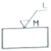
- 가공에 의한 커터의 줄무늬가 기호를 기입한 그림의 투영면에 비스듬하게 두 방향으로 교차
- 가공에 의한 커터의 줄무늬가 기호를 기입한 면의 중심에 대하여 거의 동심원모양
- 가공에 의한 커터의 줄무늬가 기호를 기입한 면의 중심에 대하여 거의 방사 모양
- 가공에 의한 커터의 줄무늬가 여러 방향
(정답률: 62%)
23. 핸들이나 바퀴 암 리브, 훅, 축 등의 절단명을 나타내는 도시법으로 가장 적합한 것은?
- 계단 단면도
- 부분 단면도
- 한쪽 단면도
- 회전도시 단면도
(정답률: 68%)
24. 구멍의 지름 치수가
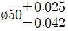
로 표시되어 있을 때 치수 공차는 몇 mm인가?(오류 신고가 접수된 문제입니다. 반드시 정답과 해설을 확인하시기 바랍니다.)- 0.013
- 0.025
- 0.037
- 0.012
(정답률: 64%)
25. 그림과 같은 도면에서 X로 표시된 부분의 의미는?
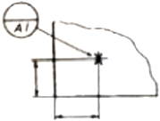
- 데이텀 표적 기호로 점을 의미한다.
- 데이텀 표적 기호로 면을 의미한다.
- 데이텀 표적 기호로 축을 의미한다.
- 데이텀 표적 기호로 선을 의미한다.
(정답률: 69%)
26. 도면에 나타난 용접기호의 지시사항을 가장 올바르게 설명한 것은?
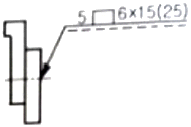
- 슬롯 너비 5mm, 용접부 길이 15mm인 플러그 용접 6개소
- 스폿의 지름이 6mm,이고 피치는 15mm인 스폿 용접
- 덧붙임 폭 5mm, 용접부 길이 15mm인 덧붙임 용접
- 용접부 지름이 6mm이고 피치는 15mm인 심 용접
(정답률: 63%)
27. 경사부가 있는 대상물에서 경사면의 실형을 표시할 필요가 있는 경우 사용하는 투상도는?
- 관용 투상도
- 보조 투상도
- 부분 투상도
- 회전 투상도
(정답률: 59%)
28. 그림과 같은 등각투상도와 이에 대한 정면도와 좌측면도가 주어질 때 평면도로 가장 적합한 것은?
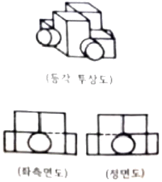
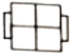
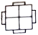
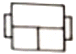
(정답률: 80%)
29. 구름 베어링 호칭번호 ‘7310 C DB’에 대한 설명으로 틀린 것은?
- 73 : 베어링 계열 기호로서 단열 엥귤러볼 베어링을 나타낸다.
- 10 : 안지름 번호로 베어링 안지름 치수는 50mm이다.
- C : 접촉각 기호로 호칭 접촉각이 10°초과 22°이하이다.
- DB : 보조 기호로 양쪽 내부 틈새를 나타낸다.
(정답률: 54%)
30. 스프링 제도 시 원칙적으로 하중이 가해진 상태(하중 상태)에 도시하여야 하는 스프링은 어느 것인가?
- 코일 스프링
- 벌류트 스프링
- 접시 스프링
- 겹판 스프링
(정답률: 61%)
31. 다음 설명에 해당하는 법칙은?
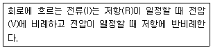
- 옴의 법칙
- 관성의 법칙
- 플레밍의 왼손 법칙
- 플레밍의 오른손 법칙
(정답률: 82%)
32. “물체에 힘을 가하면 물체는 힘과 동일한 방향으로, 힘의 크기와 비례하는 가속도를 지닌다.”라고 정의되는 법칙은?
- 관성의 법칙
- 질량의 법칙
- 가속도의 법칙
- 작용ㆍ반작용의 법칙
(정답률: 76%)
33. 직경 10cm의 원형 단면봉 1000kgf의 인장하중이 작용할 때, 이 봉에 발생되는 인장응력은 약 몇 kgf/cm2인가?
- 10
- 12.73
- 31.83
- 100
(정답률: 57%)
34. 밑면적이 A이고 높이가 h인 원뿔의 체적을 구하는 식으로 옳은 것은?
- Aㆍh
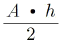
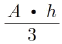
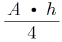
(정답률: 71%)
35. 힘의 모멘트 단위는 1Nㆍm인데 이것을 일의 단위인 J로 표시하면 얼마인가?
- 0.1J
- 0.7J
- 1J
- 1.5J
(정답률: 74%)
36. 40[W]/120[V]라고 표기된 전구가 있다. 이 전구 안 필라멘트의 저항[Ω]은 얼마인가?
- 280
- 360
- 480
- 560
(정답률: 63%)
37. 자동차가 직선 도로상의 임의의 지점 S에서 출발하여 1km 멀어진 지점 E까지 갔다가 M지경까지 250m 만큼 되돌아오는데 50초가 걸렸다면, 50초 동안의 평균 속도[m/s]는?
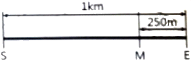
- 5
- 10
- 15
- 25
(정답률: 49%)
38. 줄(Joule)의 법칙에 의하여 줄열에 의해 발생하는 열량과 관계없는 요소는?
- 시간
- 온도
- 저항
- 전류
(정답률: 61%)
39. 길이가 40cm인 스페너에 20kgf의 힘을 가할 때 발생하는 토크[kgfㆍm]는 얼마인가?
- 4
- 8
- 10
- 12
(정답률: 77%)
40. 바닷물의 압력(수압)은 10m마다 1atm씩 증가한다. 30m 깊이에 있는 물체가 받는 절대압력은 얼마인가? (단, 대기압은 1atm이다.)
- 1atm
- 3atm
- 4atm
- 5atm
(정답률: 64%)
3과목: 자동제어
41. 전기식 서보 기구용 검출기와 관계없는 것은?
- 싱크로
- 부르동관
- 잔위차계
- 차동변압기
(정답률: 62%)
42. 전자계전기 자신의 a접점을 이용하여 회로를 구성하여 스스로 동작을 유지하는 회로는?
- 순차회로
- 우선회로
- 유극회로
- 자기유지회로
(정답률: 84%)
43. 정성적 제어 장치에 해당되는 것은?
- 서보 모터
- 전자 계전기
- 추적용 레이더
- 자동전원 조정장치
(정답률: 45%)
44. 다음 중 정상상태 오차를 최소화할 수 있는 제어방식은?
- 미분
- 비례
- 적분
- 비례미분
(정답률: 56%)
45. 제어 시스템을 해석하기 위해서는 시스템에 여러 종류의 시험 신호(test signal)를 사용하게 된다. 만일, 시스템에 갑작스런 외란이 들어왔을 때 유지되게 하려면 어떤 시험 신호(test signal)를 사용해야 하는가?
- 계단함수
- 램프함수
- 사인함수
- 포물선함수
(정답률: 62%)
46. 출력신호를 입력 쪽으로 되돌아오게 하여 목표값에 따라 자동적으로 제어하는 것을 무슨 제어라고 하는가?
- 자동 제어
- 되먹임 제어
- 시퀸스 제어
- 프로그램 제어
(정답률: 75%)
47. 96000bps를 사용하기 위한 1비트 전송시간은 약 몇 μs인가?
- 52
- 70
- 104
- 208
(정답률: 65%)
48. 다음 불대수 식의 결과로 옳은 것은?
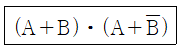
- A
- B
- A+B
- AㆍB
(정답률: 67%)
49. 다음 C언어 프로그램 중 □칸의 변수가 지정된 10진수 일 때 사용하는 출력 명령어는?
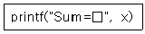
- %c
- %d
- %e
- %f
(정답률: 72%)
50. 다음 중 PLC 입ㆍ출력 장치의 역할과 가장 거리가 먼 것은?
- 기억 선택
- 잡음 제어
- 절연 결합
- 신호 레벨 변환
(정답률: 45%)
51. 서보기구에 대한 설명으로 틀린 것은?
- 출력이 낮을 때는 전기식보다 유압식이 유리하다.
- 원격 조작 장치로서의 기능과, 중력기구로서의 기능이 있다.
- 제어량의 위치, 자세 등의 기계적인 변휘의 자동제어계를 서보기구라 한다.
- 출력부를 입력신호에 추종시키기 위해서 일반적으로 힘, 토크를 증폭하는 증폭부를 가지고 있다.
(정답률: 68%)
52.
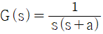
인 선형 제어계에서 w=10일 때 주파수 전달 함수의 이득[db]은?(오류 신고가 접수된 문제입니다. 반드시 정답과 해설을 확인하시기 바랍니다.)- -10
- -20
- -30
- -40
(정답률: 31%)
53. 게이지 압력을 구하는 식으로 옳은 것은?
- 게이지 압력=절대압력+대기압
- 게이지 압력=절대압력-대기압
- 게이지 압력=절대압력×대기압
- 게이지 압력=절대압력÷대기압
(정답률: 66%)
54. 다음 그림과 같이 유량제어밸브를 실린더의 입구 측에 설치하여 실린더의 전진 속도를 제어하는 회로는?
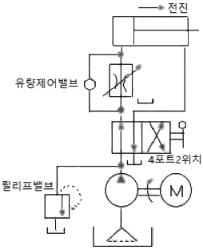
- 감압 회로
- 미터 인 회로
- 미터 아웃 회로
- 블리드 오프 회로
(정답률: 66%)
55. 다음 전달함수에 대한 설명이 틀릿 것은?
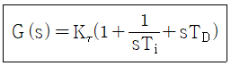
- Ti는 적분시간이다.
- TD는 리셋을(restr tate)이라 한다.
- Kτ를 비례이득이라고 한다.
- 이 조절기는 비례적분비분 동작조절기이다.
(정답률: 66%)
56. 다음 공기압 회로도의 기기 순서로 옳게 나열한 것은?
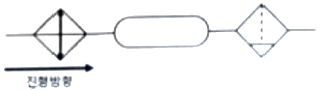
- 루브리케이터→공기 탱크→에어드라이어
- 에어드라이어→공기 탱크→루브리케이터
- 냉각기→공기 탱크→드레인 배출구 붙이 필터
- 드레인 배출구 붙이 필터→공기 탱크→냉각기
(정답률: 62%)
57. 전기식 서보기구에 관한 설명 중 틀린 것은?
- 신호의 전송이 용이하다.
- 피드백 장치가 필요 없다.
- 순차제어에 적합하지 않다.
- 유압식에 비해 취급이 간단하고 깨끗하다.
(정답률: 58%)
58. 예열을 하여 발열 반응을 하는 프로세스 제어시스템의 온도를 제어하는 데 있어 단순한 피드백 제어의 경우 예열단계에서 오버슈트(over shoot)의 주된 원인이 되는 동작은?
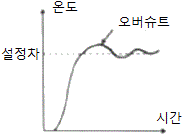
- 미분동작(D동작)
- 적분동작(I동작)
- 비례미분동(PD동작)
- 비례적분비문동작(PID동작)
(정답률: 57%)
59. 다음 그림에서 동그란 기호의 의미는?
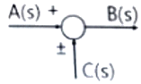
- 가합점
- 인출점
- 출력점
- 전달요소
(정답률: 76%)
60. 유접점 논리회로와 비교한 무접점 논리회로의 특징이 아닌 것은?
- 유접점에 비하여 응답속도가 빠르다.
- 기계적인 기동부가 없기 때문에 수명이 길다.
- 논리회로가 소형화되어 복잡한 회로의 대치가 가능하다.
- 전자석의 동작으로 부착회로를 빈번하게 개폐할 수 있다.
(정답률: 63%)
4과목: 메카트로닉스
61. 마이크로컨트롤러의 어셈블러 언어 프로그램 중 명령어에 해당하는 것은?
- ADD
- DEC
- MOV
- ORG
(정답률: 47%)
62. 공작물을 양극으로 하고, 전기저항이 적은 Cu, Zn을 음극으로 하여 전해액 속에 넣어 매끈한 공작물 표면을 얻을 수 있는 기공 방법은?
- 숏피닝
- 보일작업
- 연삭작업
- 전해연마
(정답률: 80%)
63. 중량물 및 대형 공작물의 중절삭에 사용하기 위한 밀링머신은?
- 만능형
- 수직형
- 수평형
- 플레이너형
(정답률: 71%)
64. 위치검출기를 사용하지 않아도 되는 모터 자체가 입력된 펄스만큼 회전할 수 있는 모터는?
- 스테핑 모터
- BLOC 모터
- 교류 유도모터
- 직류 서보모터
(정답률: 76%)
65. 8비트 마이크로프로세서의 어드레스 핀수가 16개일 때 외부에 연결할 수 있는 최대 메모리 크기(kilo byte)는?
- 8
- 64
- 256
- 1024
(정답률: 43%)
66. 산업용 로봇에서 servo ready의 의미로 옳은 것은?
- 컨트롤러에서 이상 유무를 확인, 점검하는 신호
- 정의된 위치 데이터를 키보드로 직접 입력하는 신호
- 아날로그 타입에서 모터 드라이버로 출력하는 속도 명령어 신호
- 전원 공급 후 컴트롤러가 이상 유무를 확인하기 전에 모터 드라이버 측에서 컨트롤러로 보내는 준비 신호
(정답률: 76%)
67. Thermistor의 종류에 해당하지 않는 것은?
- CTR
- NTC
- OTR
- PTC
(정답률: 60%)
68. 다음 회로에서 푸시버튼 스위치 SW6은 OFF, SW7은 ON 상태일 때의 이진수 8비트 표현 시 v값으로 옳은 것은? (단, 회로의 x표시는 리던던시, JP3의 1번 단자가 LSB이고 8번 단자가 MSB이다. 1은 OR의 기호이다.)
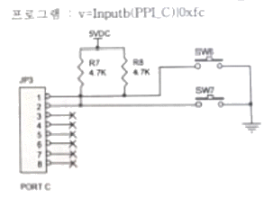
- 0000 0010
- 0000 0001
- 1111 1101
- 1111 1110
(정답률: 45%)
69. 비반전 증폭기의 설명 중 옳은 것은?
- 전압이득이 1에 가까운 증폭기이다.
- 수학적인 미분연산을 행하는 증폭기이다.
- 입력신호 위상과 출력신호 위상이 같은 증폭기이다.
- 출력신호 위상이 입력신호 위상에 비하여 90도 앞서는 증폭기이다.
(정답률: 54%)
70. 10진수 77을 2진수 값으로 변환한 값은?
- 1001101
- 1010101
- 1100101
- 1110101
(정답률: 74%)
71. 광센서의 일종인 포토트랜지스터는 어떤 효과의 원리를 이용한 것인가?
- 광전 효과
- 도전 효과
- 압전 효과
- 제백 효과
(정답률: 78%)
72. 역방량 항복에서 동작하도록 설계되어진 다이오드로서 전압안정화 회로로 사용되는 것은?
- 제너 다이오드
- 터널 다이오드
- 쇼트키 다이오드
- 기변용량 다이오드
(정답률: 73%)
73. 선삭 작업 중 초경합금으로 만든 바이트가 치핑마모가 되었을 때 재연삭에 적합한 숫돌은?
- A 46 K m V
- C 150 L m B
- GC 30 M m B
- WA 46 K m V
(정답률: 50%)
74. 선반가공 작업에서 작업자의 작업방법으로 틀린 것은?
- 척 핸들은 사용 후 척에서 제거한다.
- 바이트는 가능한 짧게 단단히 고정한다.
- 바이트 교환 시에는 기계를 정지시키고 한다.
- 표면 거칠기 상태 검사는 저속에서 손끝으로 만져 접촉을 느낀다.
(정답률: 82%)
75. 금속의 길이와 단면적은 저항값에 어떠한 관계를 가지고 있는가?
- 길이와 단면적에 비례
- 길이에 비례하고 단면적에 반비례
- 길이에 반비례하고 단면적에 비례
- 길이에 비례하고 단면적의 제곱에 반비례
(정답률: 68%)
76. 리액턴스의 설명으로 틀린 것은?
- 자체 인덕턴스가 클수록 유도 리액턴스값은 커진다.
- 정전용량이 작아질수록 용량 리액턴스의 값은 커진다.
- 교류전압의 주파수가 커질수록 유도 리액턴스의 값은 작아진다.
- 교류전압의 수파수가 커질수록 용량 리액턴스의 값은 작아진다.
(정답률: 56%)
77. 스테핑 모터의 속도제어를 위한 입력신호의 형태는?
- 압력
- 저항
- 전압
- 펄스
(정답률: 76%)
78. JK-플립플롭에서 J, K 입력이 J=K=1일 때와 동일 기능의 플립플롭은?
- F-플립플롭
- T-플립플롭
- RF-플립플롭
- RST-플립플롭
(정답률: 57%)
79. NAND 회로의 출력에 NOT 회로를 접속하면 어떠한 회로가 되는가?
- OR 회로
- AND 회로
- NOR 회로
- Flip-Flop 회로
(정답률: 69%)
80. 200V, 10W 정격인 전열기를 100V에 연결할 때 소비되는 전력[W]은 얼마인가?
- 1
- 2.5
- 10
- 25
(정답률: 60%)